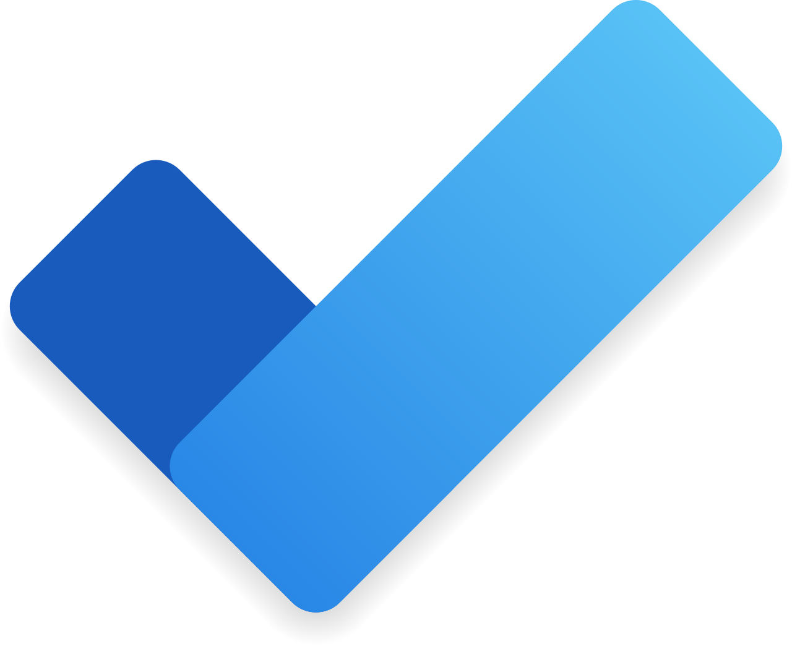

Help your people take control of their personal workload — with a simple, intelligent task manager that connects to Outlook, Teams and Planner.
Book This Session →Microsoft To Do is M365's personal task-management app — a simple, smart home for individual tasks and priorities that pulls in flagged Outlook emails, assigned Planner tasks and personal lists across every device. It sits quietly alongside the rest of M365 and becomes the single place a person decides "what am I doing today?".
It's best used for personal daily planning, a My Day focus list, shared household-style lists and tracking follow-ups from email. Every employee benefits, particularly executives, executive assistants, knowledge workers and anyone juggling tasks across multiple systems. To Do solves the universal problem of personal work being tracked in sticky notes, notebook margins and mental lists — replacing it with one cross-device, Copilot-aware task list that keeps the important things in view and everything else quietly captured.
A focused session designed to build real-world skills fast.